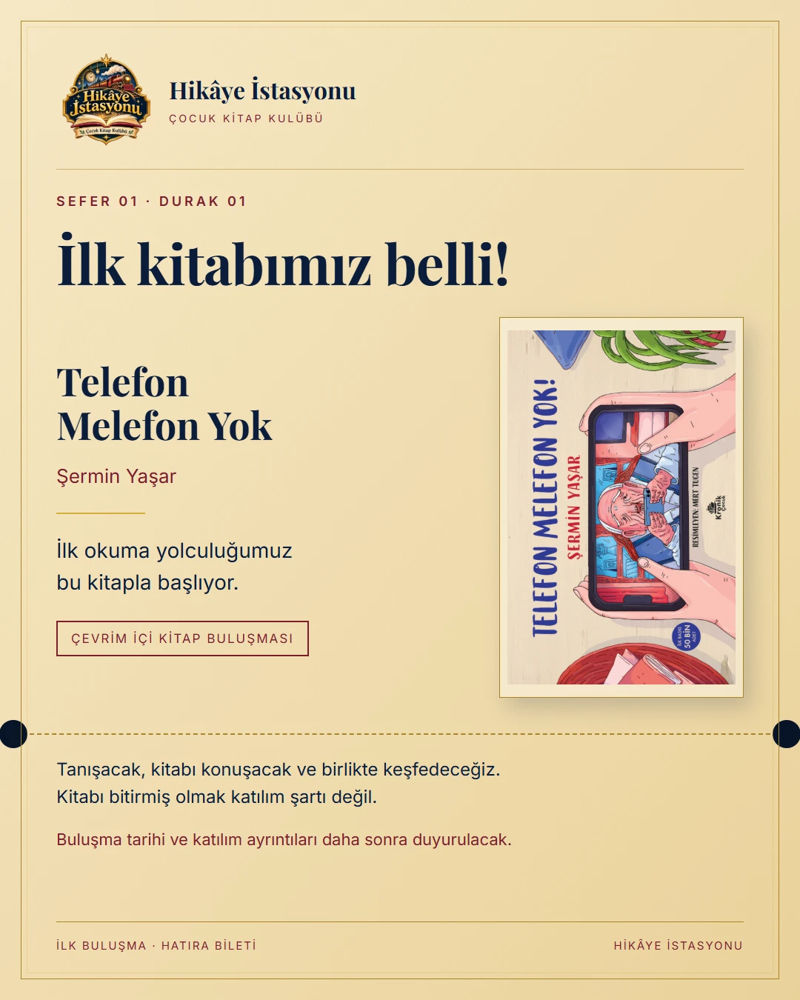

Sefer 01 · Durak 01
İlk kitabımız belli!
Telefon Melefon Yok — Şermin Yaşar
İlk okuma yolculuğumuz bu kitapla başlıyor.
Çevrim içi kitap buluşmasında tanışacak, kitabı konuşacak ve birlikte keşfedeceğiz. Kitabı bitirmiş olmak katılım şartı değil.
Buluşma tarihi ve katılım ayrıntıları daha sonra duyurulacak. Güvenli toplantı bağlantısı yalnızca ilgili velilere e-posta ile iletilecek.
Kamera kullanımı zorunlu değildir; toplantıda fotoğraf, video, ses veya ekran kaydı alınmaz.